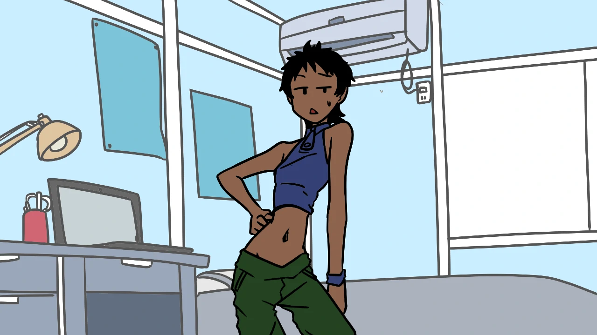
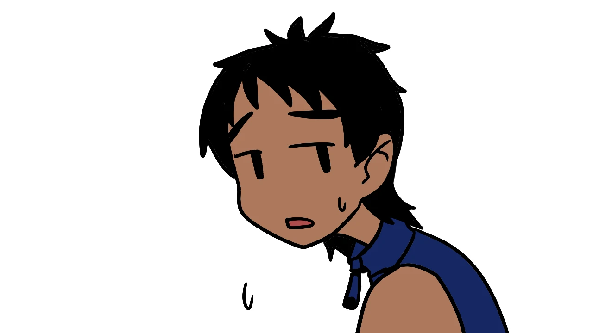

BBシスターズの話をしたい(妹)

あー、どうも？ 初めまして、鈴森姉妹の妹のほう、ヤスミです。
めんどくさいからプロフィールとかは省略させてもらって活動内容とか話そうかね

え？ほとんどこれからやるだろうってこと姉が紹介しちゃってる...？
あー、これもしかしなくてもこの記事でやることない？
あ、そう...
しょうがない、適当に自己紹介済ませておきますかー
名前は鈴森ヤスミ、年齢は[検閲済み]歳。
自作PCと洋ゲーが大好きだよ。
DOOMとかWOLFENSTEINとかとかとか...たまりませんなぁ。
あの疑似３Dで描画されるステージと解像度低いのに妙にリアルに感じるグラフィック...
...話がそれた
ま、まだなーんにも予定が立ってないけどなんかやるでしょ
それじゃあまた